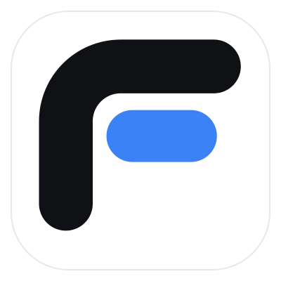
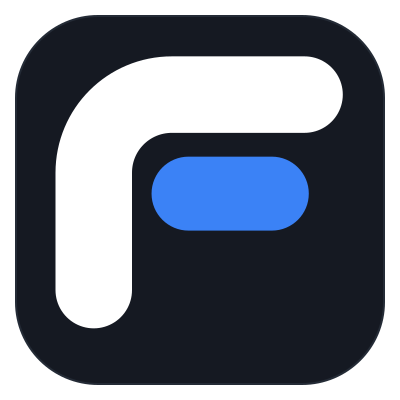
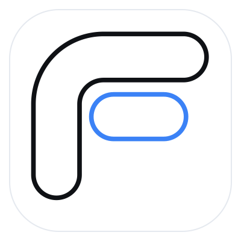
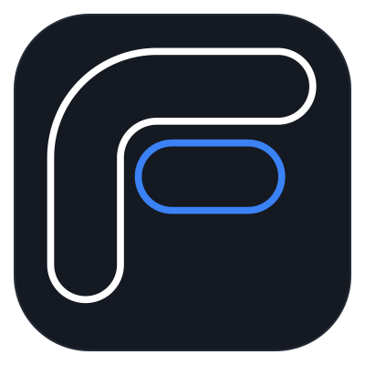

Standard is the product default. Community uses the same geometry, wordmark, and palette with transparent outlines. The supplied SVG masters are unchanged. Wordmarks use locally loaded Manrope 700 with −0.05em tracking.




App-icon tiles intentionally have a background. Unframed Community symbols remain transparent. No installable application is added by this brand integration.